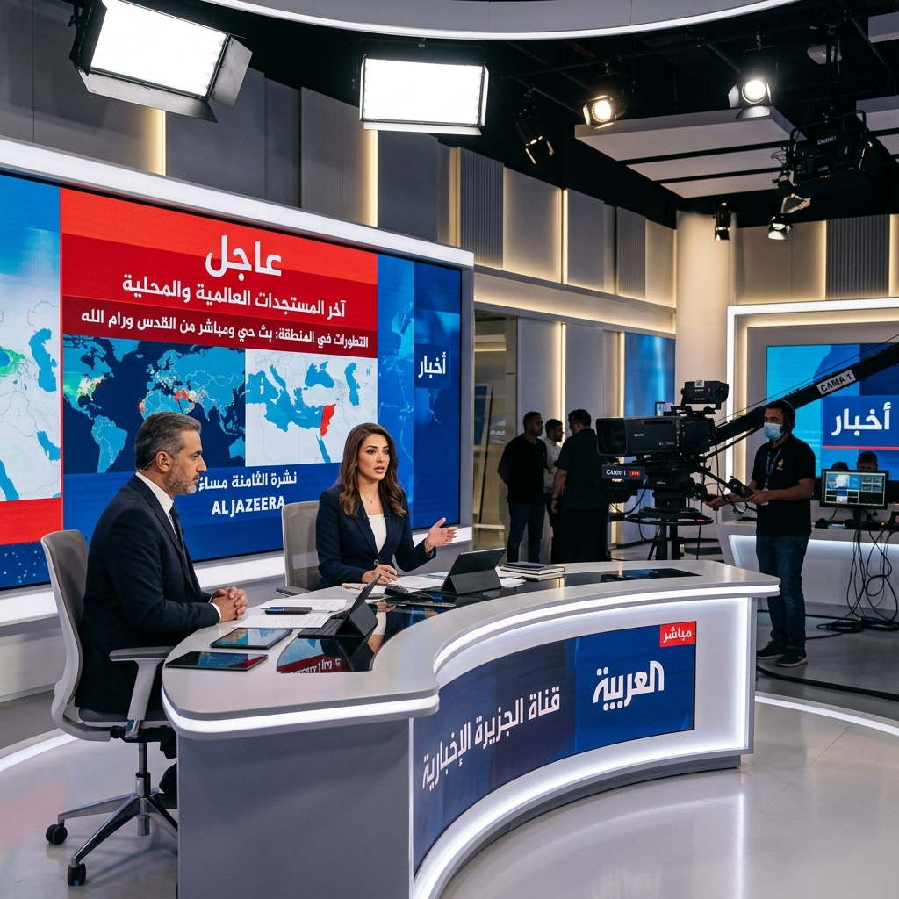
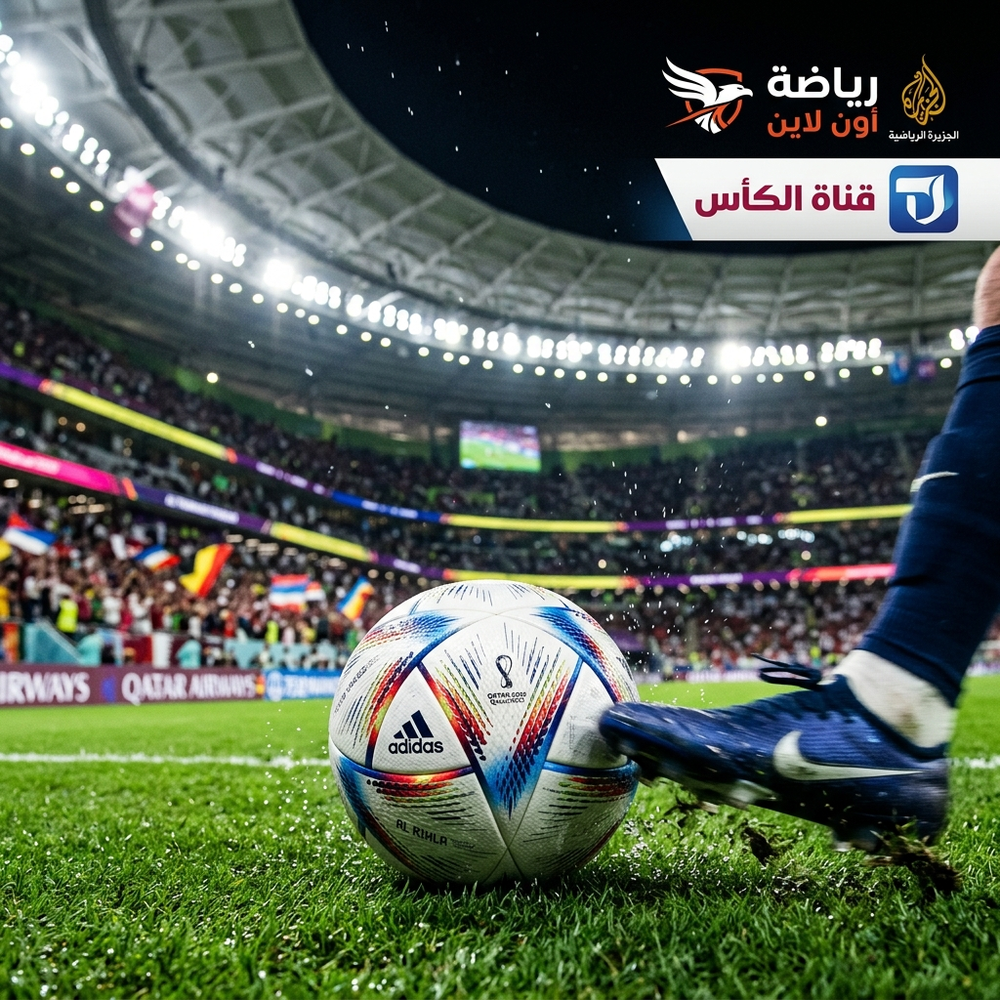
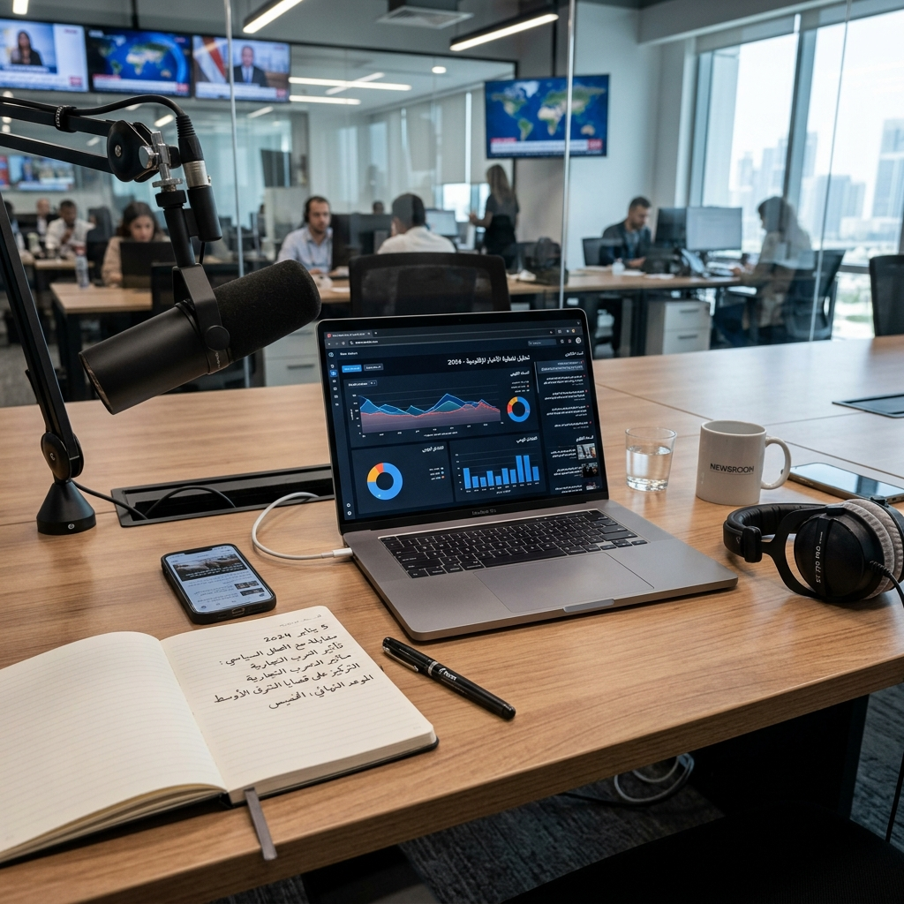

أحدث الأخبار
كل الأخبار
ملف خاص
واجهة رئيسية
إعادة تشكيل المشهد الإعلامي الرقمي في المنطقة بخطوات أسرع وأذكى
الواجهة الرئيسية أصبحت تعرض الخبر الأبرز بوضوح أعلى مع أزرار قراءة وانتقال تعمل بصورة مباشرة وواضحة.
منذ 45 دقيقة
تكنولوجيا
ابتكار
منصات الذكاء الاصطناعي تدخل مرحلة جديدة من الخدمات المحلية
بطاقات أقصر وأكثر توازنًا على الهاتف، مع مساحة أزرار أفضل للمس والقراءة.
منذ ساعة
اقتصاد
أسواق
مؤشرات جديدة تدعم نمو الاستثمارات الرقمية في الشرق الأوسط
ترتيب المعلومات داخل البطاقات أصبح أوضح وأكثر اتساقًا في جميع أحجام الشاشات.
منذ ساعتين
رياضة
تغطية
استعدادات كبرى للمواجهة النهائية وسط توقعات بجمهور قياسي
تصميم أكثر مرونة يمنح القسم الرياضي حضورًا بصريًا أقوى على الموبايل.
منذ 3 ساعاتاقتصاد وأعمال
جميع التقارير
أسواق
استقرار مرتقب في أسواق الصرف مع تحسن شهية المخاطرة
عرض مبسط وسريع للأخبار القصيرة مع تجربة لمس مريحة على الهاتف.

تحليل
الشركات الناشئة تحافظ على زخمها رغم تغيرات التمويل
تنظيم مرئي جديد يدعم قراءة المؤشرات والملفات الخاصة بسلاسة.
سياحة
نمو الطلب على السياحة الرقمية يدفع المنصات لتوسعات أكبر
بطاقات مهيأة للعمل جيدًا من عرض 320px وحتى الشاشات الكبيرة.
تكنولوجيا
كل الجديد تقنيًا
ذكاء اصطناعي
الذكاء الاصطناعي المحلي ينتقل من التجربة إلى الخدمات اليومية
أضفنا مساحة عرض أكبر للقصص التقنية المهمة مع طابع تصميمي أوضح وأكثر حيوية.
تابع الملفحلول سحابية عربية تعزز استقلالية البيانات
تصميم مختصر ومريح للقراءة السريعة من الهاتف.
توسع الشركات في خدمات الأمن الرقمي للقطاعين العام والخاص
تسلسل بصري أوضح للعناوين والوصف والأزرار.
الأجهزة القابلة للارتداء تسجل طلبًا متزايدًا في الأسواق العربية
تجربة أنظف وأكثر سرعة من النسخة السابقة.
الرياضة
كل التغطيات
دوري النخبة
3 - 1
نهائي مثير وسط حضور جماهيري قياسي
كرة السلة
92 - 88
عودة قوية في الثواني الأخيرة تقلب المواجهة
ماراثون
42 KM
مشاركة دولية واسعة واهتمام إعلامي كبير
أرشيف الأخبار
العودة للأعلىملف خاص: كيف غيّر التصميم الجديد سلوك التصفح في المنصات الإخبارية؟
عرض خط زمني مبسط يجعل الأرشيف منظمًا وواضحًا حتى على الموبايل.
تقرير: توسع الذكاء الاصطناعي يعيد رسم أولويات المؤسسات الإعلامية
إضافة مزيد من الأخبار تعطي الصفحة إحساس الموقع المتكامل بدل القالب القصير.
الأسواق العالمية تترقب مرحلة جديدة من التنظيمات المالية الرقمية
كل قسم الآن مرتبط بروابط واضحة تعمل من الأعلى والأسفل.
ملف رياضي: الجمهور يعود بقوة والمنافسة ترتفع في البطولات القارية
بطاقات وخط زمني ومربعات نتائج لتحسين الإحساس بالحيوية والتنوع.